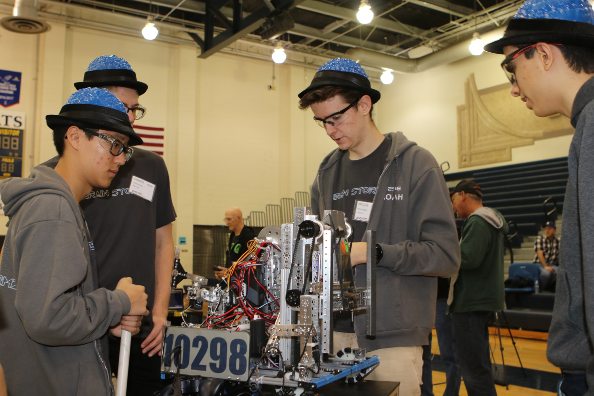
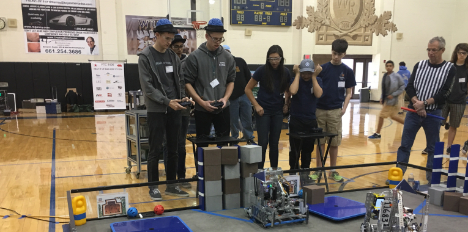
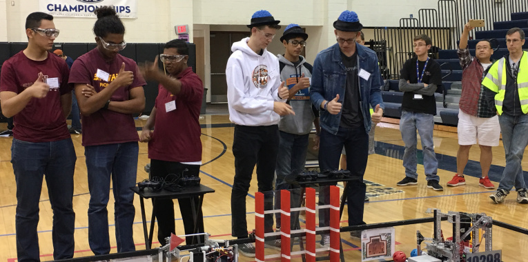

Blog
Relic Recovery Scrimmage with Teams 5942 Team Torch and 8496 Heat It Up and Keep It Cool
August 9, 2018
Today we invited two local teams in our League, 5942 Team Torch and 8496 Heat It Up and Keep It Cool, to come to the lab and have a scrimmage. We started by each introducing our team members present and showing our robots, telling the other teams what improvements we have made over the past couple weeks. We then ran many matches, running on both alliances, using PresentBot as our fourth robot. Both of the other teams had noticeably improved from when we last met them at Meet 3, although our performance had slightly dropped since with this new robot we had much less driving practice. Additionally, we discovered the hard way that our intake was shredding our glyphs, literally ripping them apart, because there was no flex in the intake. We also tried to Relic a few times with our new mechanism, but due partially to some coding errors, partially to the bad field, and mostly to lack of previous driving practice, our attempts were less than successful. Overall, the scrimmage was a lot of fun, and all of the teams got some good driving practice in. We're all looking forward to ILTs in two weeks!
Relic Recovery League D Meet 3
February 2, 2018

Today we had our final League Meet of the season, League Meet 3! We were especially excited today because we had our whole team at a competition for the first time, and were looking forward to a good day of competing. We started off by winning our first match with 8894 Class 7 as partners 168-32, which was a decisive victory that guaranteed us 20 QP going into the ILTs. We had a bit of a scare in the auto though because the jewel arm did not knock off the jewel because it was too high, but that was a minor fix and easily remedied. In our next match, paired with our friends at 8496 Heat It Up and Keep It Cool, we did great, winning 264-65, our personal high score as well as the high score for the League in general! Our next match was also a success, scoring 235-4 paired with 11167 Verdugo Hills High School Robotics. Unfortunately, because we generated so little RP, that match counted for very little. The next match, though, did count, because, paired with our pals 5942 Team Torch, we scored 201-54. Unfortunately, through driver error, we missed our entire autonomous, but we ended up winning anyway. Even though we were having a great day so far, none of us were prepared for our final match where, matched with 13978 Mechanized Garbage A, we scored a whopping 334-142, breaking not only our personal and League records set earlier today, but also the Regional high score! A great ending to a great Meet, where we ended up undefeated, 2nd at this event and 1st overall entering ILTs. This season's League Meets were great, and we are excited and ready for ILTs next month!

Relic Recovery League D Meet 2
January 12, 2018
Today we had League Meet 2 for Zone D. We were revealing our new spinny claw on WALL-E, and were excited to see how it would work. We started with our alliance partners 12675 Hermit Social Club and won in a score of 162-102. However, our auto did not work as planned, as when we lined up our robot, we had our claw that we use in auto in a position where the glyph would get stuck and not release, which had never happened before. In our second match, paired with 9894 Robolions, our jewel arm got stuck in the down position, so we knocked off both jewels and failed to correctly place the glyph when the downed arm twisted our robot. We all breathed a collective sigh of relief when we discovered that we won by 1 point, with a score of 106-105. In our next match, a non-counting surrogate match paired with 11688 Dad's Club Robotics', we once again had a nail biting match, winning by double the margin of the previous match - 163-161. We then moved into the next match with team 11167 Verdugo Hills HS as our partners, where we won by a score of 167-118. In the next match, with 11683 Roboknights Too, after a perfect autonomous, we filled an entire cryptobox with glyphs, scoring the high score of the day with 245-68! We were super hyped after this accomplishment, because we have only completed a box in practice, and only once before. We were happy after that, no matter what happened in the next match, which we ended up winning 151-64 with 9247 Chromium Robotics, ending the day undefeated with 10 QP and 447 RP!
Relic Recovery League D Meet 1
December 15, 2017
Today was the first competition that counts this season: League Meet 1. We came in confident in our robot but slightly less confident in our auto, because we did not test it as much as we would've liked. We went through inspections fairly smoothly, and went in for our first match, where our auto worked perfectly, and we ended up scoring 143-2 that match with our partners 12675 Hermit Social Club, easing our minds a lot. In our second match, we scored a whopping 262-44 with 11167 Verdugo Hills High School, which we later learned was the regional high score at the time, as well as one of the highest scores in the West Super Region! However, in that match we knowingly illegally violated rule G4 in lining up ou robot, meaning that we extended beyond the 18 inch starting cube during alignment, meaning we should have received a Minor Penalty. We reported this to referees after the match, and they said that they did not even realize that that was a rule. However, they said that they were impressed that we came up after the match to report our own penalty and didn't give us a penalty. After that, we scored 173-67 in our next match alongside 13978, Mechanized Garbage A, meaning that we were undefeated. Our next match, however, was against another undefeated team, 8496 Heat it Up and Keep it Cool. Paired with 9247 Chromium Robotics, we took a narrow victory of 151-101. Our final match was against the team that we had been paired with when we scored the regional high score - 11167 Verdugo Hills High School. That match, we made a line up error, and so did not hit the jewel and took our first loss at 137-157. Even with that loss, though, we ended the day ranked 3, and we looked at it as a success overall, because our robot did what we hoped it would do. We now are ready for Meet 2!

Relic Recovery League D Meet 0
December 15, 2017
Today was the practice 1st meet, League Meet 0. The team arrived bright and early to compete and practice for our upcoming tournaments. We were anxious to see if the robot worked properly, given that we were unsure of our untested robot's performance. We were hoping to score about 90 points per match, 55 from autonomous from knocking the jewel, placing a glyph, and parking; around 15 from glyphs, roughly a row; and 20 in endgame for balancing at the end. For our first match, the first match of the day, we earned 71 points: 55 points for autonomous, and 16 points for teleOp. Our alliance partners didn't score anything, but we still won. In the second match, we got 123 points, 85 points for our autonomous, 18 points for teleOp, and 20 points for endgame. With our alliance partners, we ended up with the day's highest score at that point at 135 points and won the match. Following, in the third match, we scored 71 points again, 55 points for autonomous and 16 points for teleOp. We won this round as well and finished with 135 points with our alliance partners. For the fourth match, we earned 93 points, with 55 for autonomous, 18 for teleOp, and 20 points for endgame. With our alliance partners, we ended up with 165 points total which was the second highest score up to that point in the region! Finally, for our last match, we got 56 points, 40 points for autonomous and 16 points for teleOp. Due to our auto not performing as well as it normally did, we took our first and only loss with a combined score of 78. Overall, we won 4 out of 5 matches, ranking second. Even though we didn't win, League Meet 0 was still a success to us. We had fun and we had a strong robot that consistently scored well.